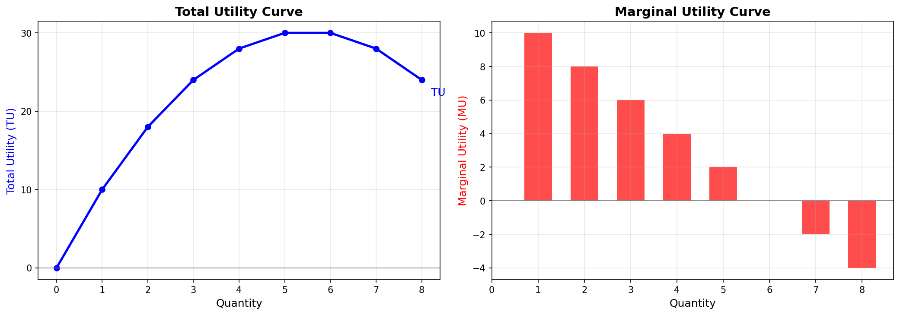
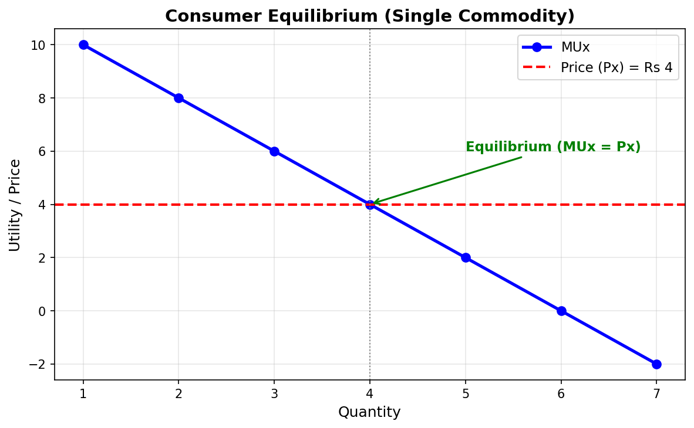
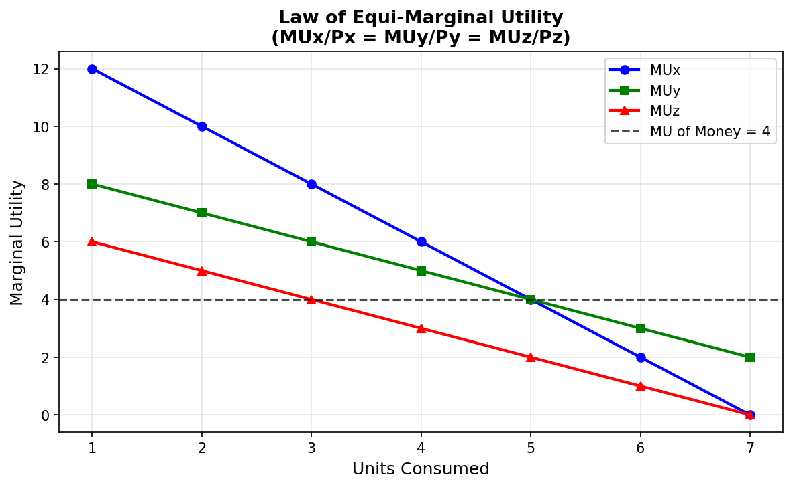
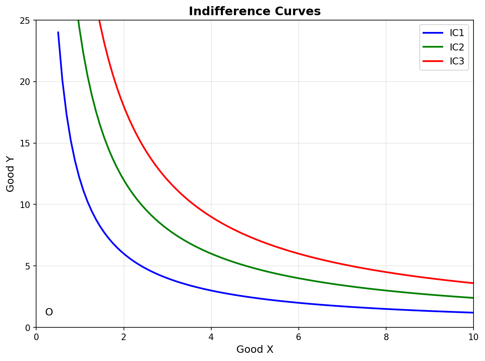
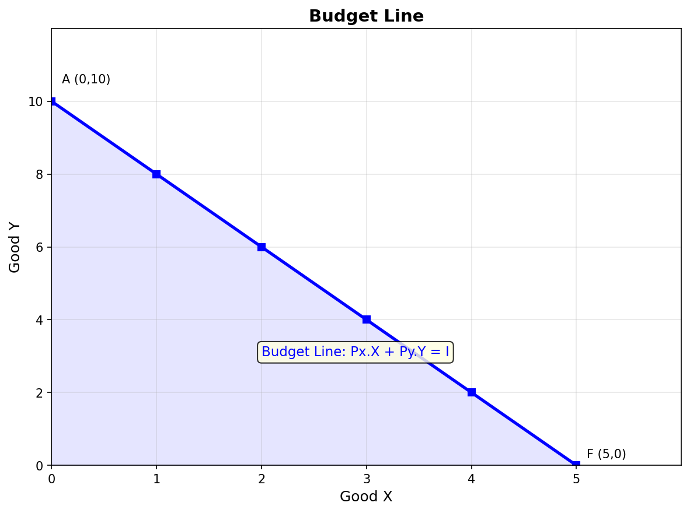
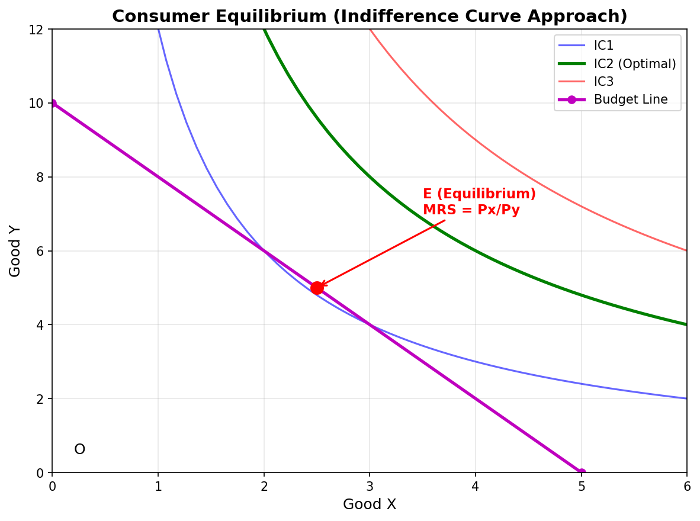

Chapter 2
Consumer's Equilibrium
Understanding how a consumer achieves maximum satisfaction — through utility analysis, indifference curves, and budget constraints.
1. What is a Consumer?
A Consumer is a person who buys goods and services to satisfy their wants.
Key Point: Consumer ≠ Customer. A consumer is the end user who actually uses the product to get satisfaction.
Real Life:
You go to a shop and buy a samosa → You eat it → You feel happy → That happiness is called Utility in Economics.
2. What is Utility?
Utility = The satisfaction or happiness a consumer gets from consuming a good/service.
Important Points about Utility:
| Point | Explanation |
|---|---|
| Utility is subjective | Same thing gives different satisfaction to different people |
| Utility ≠ Usefulness | A thing may have no use but still give satisfaction (e.g., painting) |
| Utility varies | Same thing can give different utility to same person at different times |
Example:
- Ice cream in summer → High utility 🍦
- Ice cream in winter → Low utility ❄️
3. Cardinal vs Ordinal Utility
Economics has two approaches to measure utility:
Cardinal Utility Approach (Old School)
Cardinal = Utility can be measured in numbers (like 1, 2, 3...)
- Utility is measured in Utils (imaginary units)
- Alfred Marshall gave this approach
- Example: "I get 10 utils from eating a pizza"
Ordinal Utility Approach (Modern)
Ordinal = Utility cannot be measured but can be ranked/compared
- We can say: Pizza > Burger > Sandwich (in terms of preference)
- We CANNOT say: Pizza gives 10 utils, Burger gives 5 utils
- J.R. Hicks & R.G.D. Allen gave this approach
Comparison:
| Basis | Cardinal Utility | Ordinal Utility |
|---|---|---|
| Measurement | Can be measured in numbers | Cannot be measured, only ranked |
| Who gave? | Alfred Marshall | Hicks & Allen |
| Unit | Utils | No unit (just ranking) |
| Realistic? | Less realistic | More realistic |
| Tool used | TU, MU curves | Indifference Curves |
| Example | "I got 20 utils" | "I prefer tea over coffee" |
Important: In this chapter, we will study BOTH approaches!
4. Total Utility (TU) & Marginal Utility (MU)
Total Utility (TU)
TU = Total satisfaction from consuming ALL units of a good.
Marginal Utility (MU)
MU = Additional satisfaction from consuming ONE more unit.
Formula:
TU = Sum of MU of all units consumed MU = Change in TU / Change in Quantity = ΔTU / ΔQ
Example: Eating Samosas 🥟
| Samosa No. | MU (Extra Happiness) | TU (Total Happiness) |
|---|---|---|
| 1st | 10 | 10 |
| 2nd | 8 | 18 |
| 3rd | 6 | 24 |
| 4th | 4 | 28 |
| 5th | 2 | 30 |
| 6th | 0 | 30 |
| 7th | -2 | 28 |
| 8th | -4 | 24 |
Let's Understand with Real Life:
Story from Lecture:
"Bablu Bhaiya went to eat samosas. 1st samosa → maza aa gaya (10 happiness). 2nd samosa → theek thaak (8 happiness). 3rd → peet bhar gayi (6 happiness). 4th → ab aur nahi (4 happiness). 5th → force karke khaya (2 happiness). 6th → zero happiness. 7th → ulti aa gayi (-2 happiness)!"
Key Points:
- As MU decreases, TU increases but at a decreasing rate
- When MU = 0 → TU is MAXIMUM (Point of Satiety)
- When MU becomes NEGATIVE → TU starts FALLING
Graphical Relationship:

Connection: TU is like a bucket filling with water. MU is the rate at which water is being poured. When the bucket is full (MU=0), TU is maximum. If you keep pouring (MU negative), water overflows (TU falls).
5. Law of Diminishing Marginal Utility (LDMU)
Definition:
Law of Diminishing Marginal Utility states that as a consumer consumes more and more units of a good, the marginal utility from each successive unit keeps decreasing.
Assumptions:
- Continuous consumption – No gap between units
- Same good – All units are identical
- Normal consumer – Mentally and physically normal
- No change in taste/income – Consumer's preference is constant
- Reasonable units – Units are of standard size
Real Life Examples:
| Scenario | 1st Unit MU | 2nd Unit MU | 3rd Unit MU |
|---|---|---|---|
| 🥤 Drinking water when thirsty | Very High (100%) | Medium (60%) | Low (20%) |
| 🍕 Eating pizza | Maximum happiness | Less happiness | Even less |
| 📺 Watching movie | Super excited | Okay feeling | Bored |
| 👗 Buying clothes | Love it! | Like it | Hmm... okay |
Why does MU decrease?
Because wants are satiable — as you get more of something, your desire for it decreases.
Exceptions (When LDMU Doesn't Apply):
| Exception | Example |
|---|---|
| Collectors | Stamp/coin collectors — each new piece gives MORE happiness |
| Money | More money → generally more utility (doesn't decrease) |
| Hobbies | Doing what you love — satisfaction may not decrease |
| Addiction | Alcohol, smoking — MU may increase initially |
Diagram:

6. Consumer's Equilibrium – Meaning
Definition:
Consumer's Equilibrium is a situation where a consumer gets maximum satisfaction from his limited income and has no tendency to change his consumption pattern.
Think of it Like:
"You have ₹100 in your pocket. You go to a fair. You buy different things. There comes a point where you feel — 'Ab aur kuch nahi chahiye, sab theek hai!' → That's your EQUILIBRIUM!"
Two Cases of Consumer's Equilibrium:
| Case | Approach |
|---|---|
| Single Commodity | When consumer buys only ONE good |
| Two or More Commodities | When consumer buys MULTIPLE goods |
7. Consumer's Equilibrium – Single Commodity Case
Condition:
A consumer is in equilibrium when:
MUx = Px
(Marginal Utility of Good X = Price of Good X)
Why This Condition?
Think like this:
| Situation | Meaning | Action |
|---|---|---|
| MUx > Px | Satisfaction from last unit is MORE than what you paid | ✅ Buy MORE units |
| MUx < Px | Satisfaction from last unit is LESS than what you paid | ❌ Buy LESS units |
| MUx = Px | Satisfaction = Price paid | 🛑 EQUILIBRIUM – Stop here! |
Example with Numbers:
| Units | MUx (Utils) | Px (Price in ₹) | Situation |
|---|---|---|---|
| 1 | 10 | 4 | MU > P → Buy more |
| 2 | 8 | 4 | MU > P → Buy more |
| 3 | 6 | 4 | MU > P → Buy more |
| 4 | 4 | 4 | MU = P → EQUILIBRIUM |
| 5 | 2 | 4 | MU < P → Buy less |
| 6 | 0 | 4 | MU < P → Buy less |
Real Life Story (From Lecture):
"Bhaiya went to eat samosa. Price = ₹4 per samosa.
- 1st samosa → MU = 10 → ₹4 main 10 ka maza mil raha → BEST! (MU > P)
- 2nd → MU = 8 → Still great (MU > P)
- 3rd → MU = 6 → Good (MU > P)
- 4th → MU = 4 → Ab ₹4 de rahe aur ₹4 ka maza mil raha → Exactly equal! STOP! (MU = P)
- 5th → MU = 2 → ₹4 de rahe aur ₹2 ka maza → Loss! (MU < P)
Important Assumptions:
- Utility is measurable in cardinal numbers
- Money has constant marginal utility
- No substitutes – only one good
- Consumer is rational – wants maximum satisfaction
- Income is given – fixed budget
Diagram Explanation:
In the diagram: The point where MU curve intersects the Price line is the Equilibrium point. Before it, MU > P (buy more). After it, MU < P (buy less).
8. Consumer's Equilibrium – Two Commodities (Law of Equi-Marginal Utility)
The Problem:
In real life, we never buy just ONE thing. We buy many things! So how do we decide?
Law of Equi-Marginal Utility (Gossen's Second Law):
A consumer is in equilibrium when the ratio of MU to Price is equal for ALL goods.
Formula:
MUx / Px = MUy / Py = MUz / Pz = MU of Money (Constant)
Simple Language:
"Jitna bhi paisa hai, usko aise kharch karo ki har cheez ke aakhri rupee se utni hi khushi mile!"
Example: You have ₹10, want to buy Samosa (₹2 each) and Juice (₹2 each)
| Unit | MU Samosa | MU/Price Samosa (÷2) | MU Juice | MU/Price Juice (÷2) |
|---|---|---|---|---|
| 1 | 20 | 10 | 16 | 8 |
| 2 | 16 | 8 | 14 | 7 |
| 3 | 12 | 6 | 12 | 6 ← EQUAL |
| 4 | 8 | 4 | 10 | 5 |
| 5 | 4 | 2 | 8 | 4 |
How to reach Equilibrium:
Step 1: Compare MU/Price of all goods
Step 2: Spend ₹1 on the good that gives HIGHEST MU/Price
Step 3: Keep doing this until MU/Price of all goods becomes EQUAL
The Spending Process (From Lecture):
₹1 → Samosa (MU/P = 10) → Highest ₹2 → Samosa (MU/P = 10) → Highest ₹3 → Samosa (MU/P = 8) ₹3 → Juice (MU/P = 8) → Same! ₹4 → Samosa (MU/P = 6) ₹5 → Juice (MU/P = 6) → Same again! At the end: MUx/Px = MUy/Py = 6 → EQUILIBRIUM!

Important Note:
Law of Diminishing MU applies to SINGLE commodity.
Law of Equi-Marginal Utility applies to MULTIPLE commodities.
9. Indifference Curve Analysis (Ordinal Utility Approach)
Why do we need this?
Cardinal approach (MU measurement in utils) is unrealistic. Can you really say "I got 20 utils from pizza"? No! That's why we use Ordinal approach.
What is an Indifference Curve (IC)?
Indifference Curve is a curve that shows different combinations of two goods that give equal satisfaction to the consumer.
Meaning of "Indifference":
"The consumer is indifferent between all points on the same IC because they all give the SAME satisfaction."
Example:
| Combination | Tea (cups) | Coffee (cups) | Satisfaction |
|---|---|---|---|
| A | 1 | 6 | Same ✅ |
| B | 2 | 3 | Same ✅ |
| C | 3 | 2 | Same ✅ |
| D | 6 | 1 | Same ✅ |
Whether you give the consumer Combination A (1 tea + 6 coffee) or Combination D (6 tea + 1 coffee) — they don't care because satisfaction is the same!
Indifference Map:
A set of multiple ICs is called an Indifference Map.
- Higher IC → Higher satisfaction
- IC₁ < IC₂ < IC₃ (higher = better)

10. Properties of Indifference Curve
Property 1: Downward Sloping (Negative Slope)
To get more of Good X, you must give up some of Good Y → Inverse relationship
Property 2: Convex to the Origin
IC is convex because of Diminishing Marginal Rate of Substitution (MRS)
Property 3: Higher IC = Higher Satisfaction
IC₂ > IC₁ because it represents MORE goods = MORE satisfaction
Property 4: Two ICs Never Intersect
If they intersect, it would mean the same point gives two different satisfaction levels → Impossible!
Property 5: IC Never Touches X or Y Axis
If IC touches the axis, it means 0 quantity of one good → But consumer needs BOTH goods
11. Marginal Rate of Substitution (MRS)
Definition:
MRS is the rate at which a consumer is willing to give up Good Y to get one more unit of Good X, while staying on the same IC.
Formula:
MRSxy = Units of Y sacrificed / Units of X gained = ΔY / ΔX
Example:
| Move | Change in X | Change in Y | MRS = ΔY/ΔX |
|---|---|---|---|
| A → B | +1 | -3 | 3 |
| B → C | +1 | -2 | 2 |
| C → D | +1 | -1 | 1 |
| D → E | +1 | -0.5 | 0.5 |
Key Point:
MRS keeps DECREASING → This is why IC is convex to the origin!
Reason for Diminishing MRS:
As you get more of Good X, the desire for additional X decreases, so you are willing to give up LESS of Good Y.
12. Budget Line / Price Line
Definition:
Budget Line shows all combinations of two goods that a consumer can buy with his given income at given prices.
Formula:
Px × X + Py × Y = I
Where:
- Px = Price of Good X
- Py = Price of Good Y
- I = Income of consumer
Example:
Income = ₹50, Price of X = ₹10, Price of Y = ₹5
| Combination | X (units) | Y (units) | Total Spent |
|---|---|---|---|
| A | 0 | 10 | 0 + 50 = 50 |
| B | 1 | 8 | 10 + 40 = 50 |
| C | 2 | 6 | 20 + 30 = 50 |
| D | 3 | 4 | 30 + 20 = 50 |
| E | 4 | 2 | 40 + 10 = 50 |
| F | 5 | 0 | 50 + 0 = 50 |

Slope of Budget Line:
Slope = Px / Py = 10 / 5 = 2
Meaning: To get 1 unit of X, you have to give up 2 units of Y.
Budget Set:
All the combinations that a consumer can afford (including inside the budget line).
Shift in Budget Line:
| Change | Effect on Budget Line |
|---|---|
| Income ↑ | Shifts RIGHT (parallel outward) |
| Income ↓ | Shifts LEFT (parallel inward) |
| Price of X ↑ | X-intercept moves LEFT (pivot inward) |
| Price of X ↓ | X-intercept moves RIGHT (pivot outward) |
| Price of Y ↑ | Y-intercept moves DOWN |
| Price of Y ↓ | Y-intercept moves UP |
Think of Budget Line Like:
"You have ₹50 in your pocket. Samosa = ₹10, Juice = ₹5. The budget line shows ALL the ways you can spend your ₹50 — nothing more, nothing less!"
13. Consumer's Equilibrium – Indifference Curve Approach
The BIG Idea:
Consumer reaches equilibrium where the Budget Line is TANGENT to the Highest Possible Indifference Curve.
Two Conditions:
Condition 1 (Necessary):
MRSxy = Px / Py
(Slope of IC = Slope of Budget Line)
Condition 2 (Sufficient):
IC must be CONVEX to the origin
(MRS must be diminishing)
Why is this the Equilibrium?
| Point | Situation | Meaning |
|---|---|---|
| E (Tangency) | Budget Line touches IC₂ | ✅ EQUILIBRIUM — Maximum satisfaction within budget |
| Any point on IC₁ | Intersects budget line at 2 points | ❌ NOT equilibrium — You can reach higher IC |
| IC₃ | Budget line cannot reach it | ❌ NOT possible — Beyond budget |
Graphical Explanation:

"At point E, the budget line is just TOUCHING the IC₂. This is the highest IC the consumer can reach with their money. At this point, MRS = Px/Py and IC is convex."
Real Life Understanding:
"You have ₹500 to spend on dinner. You look at the menu (budget line). You want maximum taste (highest IC). You order a combination where the last bite of pasta gives you as much happiness as the last sip of juice (MRS = price ratio). That's your equilibrium!"
14. Cardinal vs Ordinal Approach – Final Comparison
| Basis | Cardinal Approach | Ordinal Approach |
|---|---|---|
| Who gave? | Alfred Marshall | Hicks & Allen |
| Utility measurable? | Yes (in utils) | No (only ranking) |
| Tool used | TU & MU curves | Indifference Curves |
| Equilibrium condition | MUx = Px (single) MUx/Px = MUy/Py (multiple) | MRSxy = Px/Py IC is convex |
| Realism | Less realistic | More realistic |
| Unit | Cardinal numbers (1,2,3...) | Ordinal ranking (I, II, III...) |
15. Chapter Connection – How Everything is Linked
flowchart TD
A["Consumer wants
MAXIMUM SATISFACTION"] --> B["Has LIMITED INCOME
& goods have PRICES"] B --> C["CARDINAL APPROACH
(Marshall)"] B --> D["ORDINAL APPROACH
(Hicks & Allen)"] C --> E["Utility measured
in Utils"] D --> F["Utility ranked
via ICs"] E --> G["TU & MU Curves
Law of DMU"] F --> H["Indifference Curves
Properties of IC"] G --> I["Single: MUx = Px
Multiple: MUx/Px = MUy/Py
(Equi-Marginal)"] H --> J["MRS concept"] J --> K["Budget Line
(Px·X + Py·Y = I)"] I --> L["EQUILIBRIUM
= MAXIMUM SATISFACTION
No tendency to change"] K --> L style A fill:#1a5e4a,color:#fff,stroke:#1a5e4a,stroke-width:2px style B fill:#e8f0ec,stroke:#1a5e4a,stroke-width:1px style C fill:#fff8e5,stroke:#d4a12a,stroke-width:1px style D fill:#fff8e5,stroke:#d4a12a,stroke-width:1px style E fill:#f0ede8,stroke:#6b6b6b,stroke-width:1px style F fill:#f0ede8,stroke:#6b6b6b,stroke-width:1px style G fill:#f0ede8,stroke:#6b6b6b,stroke-width:1px style H fill:#f0ede8,stroke:#6b6b6b,stroke-width:1px style I fill:#e8f0ec,stroke:#1a5e4a,stroke-width:1px style J fill:#e8f0ec,stroke:#1a5e4a,stroke-width:1px style K fill:#e8f0ec,stroke:#1a5e4a,stroke-width:1px style L fill:#1a5e4a,color:#fff,stroke:#1a5e4a,stroke-width:2px
MAXIMUM SATISFACTION"] --> B["Has LIMITED INCOME
& goods have PRICES"] B --> C["CARDINAL APPROACH
(Marshall)"] B --> D["ORDINAL APPROACH
(Hicks & Allen)"] C --> E["Utility measured
in Utils"] D --> F["Utility ranked
via ICs"] E --> G["TU & MU Curves
Law of DMU"] F --> H["Indifference Curves
Properties of IC"] G --> I["Single: MUx = Px
Multiple: MUx/Px = MUy/Py
(Equi-Marginal)"] H --> J["MRS concept"] J --> K["Budget Line
(Px·X + Py·Y = I)"] I --> L["EQUILIBRIUM
= MAXIMUM SATISFACTION
No tendency to change"] K --> L style A fill:#1a5e4a,color:#fff,stroke:#1a5e4a,stroke-width:2px style B fill:#e8f0ec,stroke:#1a5e4a,stroke-width:1px style C fill:#fff8e5,stroke:#d4a12a,stroke-width:1px style D fill:#fff8e5,stroke:#d4a12a,stroke-width:1px style E fill:#f0ede8,stroke:#6b6b6b,stroke-width:1px style F fill:#f0ede8,stroke:#6b6b6b,stroke-width:1px style G fill:#f0ede8,stroke:#6b6b6b,stroke-width:1px style H fill:#f0ede8,stroke:#6b6b6b,stroke-width:1px style I fill:#e8f0ec,stroke:#1a5e4a,stroke-width:1px style J fill:#e8f0ec,stroke:#1a5e4a,stroke-width:1px style K fill:#e8f0ec,stroke:#1a5e4a,stroke-width:1px style L fill:#1a5e4a,color:#fff,stroke:#1a5e4a,stroke-width:2px
Important Exam Questions
Short Questions (2-3 Marks):
- Define Consumer's Equilibrium. What are its conditions?
- State the Law of Diminishing Marginal Utility with an example.
- What is the difference between Total Utility and Marginal Utility?
- State the condition for consumer's equilibrium under single commodity case.
- What is Indifference Curve? Give any two properties.
- What is Budget Line? Why is it downward sloping?
- Define Marginal Rate of Substitution (MRS).
- Distinguish between Cardinal and Ordinal Utility approaches.
Long Questions (4-6 Marks):
- Explain consumer's equilibrium under the cardinal utility approach (single commodity case) with schedule and diagram.
- Explain the Law of Equi-Marginal Utility with the help of a schedule and diagram.
- Explain the properties of Indifference Curve in detail.
- What is Budget Line? Explain the effect of change in income and prices on the budget line.
- Explain consumer's equilibrium under the indifference curve approach with the help of a diagram.
- Differentiate between Cardinal and Ordinal Utility approaches to consumer's equilibrium.
Numerical Questions:
- Calculate TU and MU from the given data:
- Units consumed: 1, 2, 3, 4, 5, 6
- MU: 12, 10, 8, 6, 4, 2
- Find TU at each level and the point where TU is maximum.
- A consumer buys 5 units of a good at price ₹8. MU from 5th unit is 6. Is the consumer in equilibrium? If not, what should he do?
- With Income = ₹100, Px = ₹10, Py = ₹5:
- Draw the budget line
- Find the slope
- What happens if income increases to ₹120?
💡Tip: In Consumer's Equilibrium, always remember — EQUILIBRIUM = Maximum Satisfaction + No Change in Behavior. The consumer has found the PERFECT balance between what they WANT and what they CAN AFFORD!
📐Graph Tip: Practice drawing all 6 graphs:
1. TU-MU Curves
2. Single Commodity Equilibrium
3. Budget Line
4. Indifference Curves
5. Consumer Equilibrium (IC Approach)
6. Equi-Marginal Utility
1. TU-MU Curves
2. Single Commodity Equilibrium
3. Budget Line
4. Indifference Curves
5. Consumer Equilibrium (IC Approach)
6. Equi-Marginal Utility
Diagram + Explanation = Full Marks!